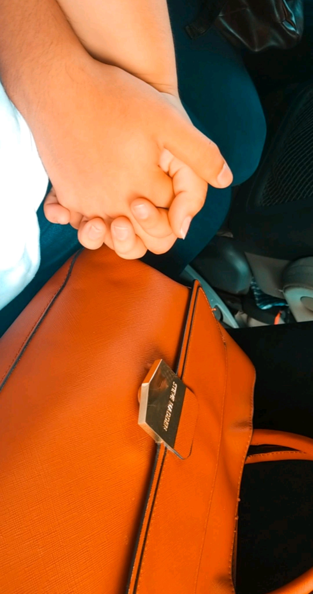

Primero que nada agradecido por que ya son 6 meses que estamos juntos y
ni la distancia nos ha separado, me parece gracioso hasta cierto punto lo rapido que ha pasado el
tiempo,si te soy honesto nunca pense llegar a tener la suerte de
encontrarme con alguien como tu y muho menos que me amaran de la manera
en que tu lo haces tú
, la forma en que me ves como me mimas me concientes me llenas de muchas
alegrias es simplemente única.
creemelo que te eligiria a ti una y otr ves pues me has enamorado mucho
y enserio se siente tan biensentirse de esta manera sin ningun miedo mas
alla de los celos que de paso perdon si me paso un poco con los mismos
es que tu sabes como me pongo jeje, ( tas bien hermosa alv que nadie te
vea aaaagh) amor en un dia como este hace 6 meses tuve el valor de
expresarte lo que siento con miedo a que te alejaras y me doliera pero
valio mucho, ya que tu tambien sientes lo mismo por mi, a lo mejorpara
otros era algo super evidente pero para mi quizas no lo hera tanto jeje,
bueno soy un tremendo distraido tu lo sabes.
Yo siempre me pongo a pensar y a recordar cuando ya teniamos confianza y
muchas veces sin decirtelo en mi cabeza solo venia a mi mente cuando el
principito cuidaba a su rosa (cursi lo se jej) y me preguntaba si tu
eras esa personita a la cual desearia cuidar por siempre, mi eterno
amor, apesar que solo son 6 meses y la gente podria decir "pero que no
llevan ni el año tontos" (como la suegris (la amo suegris xD)) pero yo
creo que por todo lo que hemos pasado por el tiempo que hemos pasado y
por la ves que rezaste para saber que, yo estoy muy seguro que quiero
una familia con tigo y envejecer a tu lado despertar cada dia al lado de
un angel mas hermoso que las palabras que pueda escribir aca, por que
como dice una cancion: no se como pude tener tanta suerte amo y cuando
este frente a ti frente a diosito cuando nos casemos creeme que no podre
contener las lagrimas de felicidad.
Bueno no me extiendo muchito mas felices 6 meses amor eres la mujer de
mis sueños la mujer que he esperado con la que sueño enevejecer a su
lado, perdon si te he lastimado alguna ves incluyendo el cuando solo
heramos amigos, perdon por mis cosas y actitudes que me entran por
ratos, ya las estoy cambiando y mejorando por ti, te amo mi niña S.G.G.R
26/02/20.
